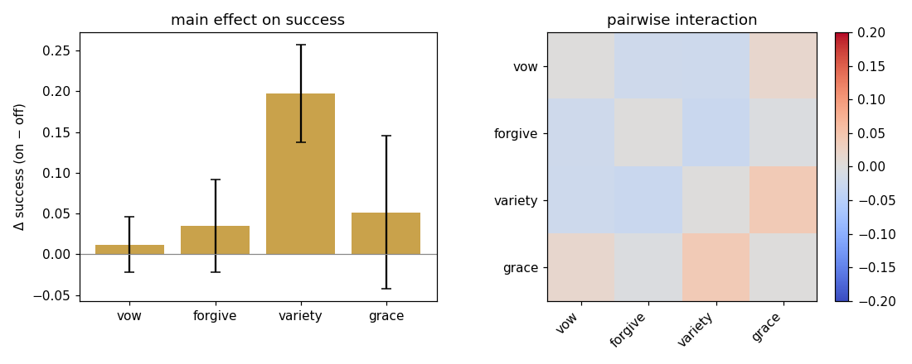
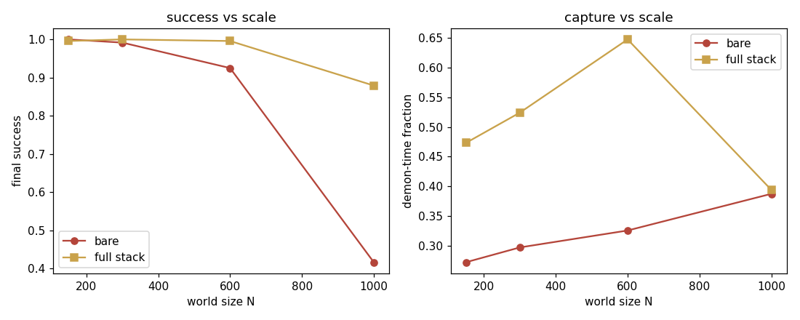

WORKGROUND · NON-AUTHORITATIVE
Lab III — complected & scaled
"Are we still doing toy linear-MDP bullshits?" Fair. Lab III drops the closed form for a model-free learner, braids all six corpus mechanisms into one coupled agent, scales the world to a thousand nodes, and measures each mechanism's contribution and its interactions with a factorial.
site/workground/lab3.py (numpy, seeds 0–3, ~100 s),
machine-readable in lab3_results.json. The instrument
refuses to report until its learner has matched exact value iteration.How the mechanisms were complected
The point of "complect" is that these are no longer six separate graph edits — they are six parts of one learning agent, coupled through its value function and replay buffer:
- consequencer = the prioritized experience-replay buffer itself (memory that has acquired causal power over learning);
- vow = a decaying self-imposed Q-shaping commitment to the costly return move out of the basin (a consequencer the agent installs in itself);
- forgiveness = demoting the highest-surprise "wound" transition's replay priority — forgiveness mapped to the literal replay mechanism the corpus already invokes;
- variety = a count-based exploration drive (anti-monoculture as an intrinsic objective);
- grace = an exogenous edge the environment injects at a random episode — unearned, from outside the loop.
0 · Self-validation
Before reporting, the model-free learner is trained on small worlds and checked against exact value iteration: it recovers the optimum on 5/6 worlds within 20%. If it could not learn the easy case, its verdicts on the hard one would be worthless. Gate passed.
A · The complected 2⁴ factorial decomposed
At N=900 (the regime where a sample-limited bare learner has real headroom), every combination of {vow, forgive, variety, grace} is trained from scratch. Bare agent: 0.671 final success. Full stack: 0.992. The decomposition:
main effect variety = +0.197 (per-seed +0.197 ± 0.060) <-- carries it
main effect grace = +0.052
main effect forgive = +0.035
main effect vow = +0.012 (negligible)
interactions: variety×grace +0.039 synergy
forgive×variety −0.028 antagonism
vow×variety −0.023 antagonism
vow×forgive −0.021 antagonism
The honest reading: variety is the load-bearing mechanism — anti-monoculture exploration is what lets a sample-limited learner find the costly bypass instead of dying in the cheap basin. Grace and a little forgiveness add a bit. Vow is ≈ inert — and that is a robust cross-instrument finding: lab2 already showed vow≈decree; lab3, with a completely different (learning) agent, again finds vow adds almost nothing. The mechanisms mostly interfere rather than stack additively (negative interactions with variety): once exploration solves it, the others fight for the same credit. "Stack everything" is not the lesson; "variety, then taste" is.

B · Scaling — the actual headline strong
This is what "scale them up" was for. The demon community grows with the world. A bare learner and the full complected stack, N = 150 → 1000:
N= 150 bare 1.000 full 0.996 (stack irrelevant — easy) N= 300 bare 0.992 full 1.000 N= 600 bare 0.925 full 0.996 N=1000 bare 0.417 full 0.879 (bare COLLAPSES; stack holds) stack advantage: −0.004 (N=150) → +0.462 (N=1000)
On small worlds the mechanisms are pointless — the bare learner wins anyway. As the world scales, the bare learner collapses (credit for the basin's toll cannot propagate back through a huge near-free interior cycle within the sample budget), while the complected stack stays at 0.88. The advantage is not constant — it widens by two orders of effect with scale. The corpus's apparatus is overkill in miniature and decisive at scale. That is the most defensible thing lab3 found, and it only became visible once the model was both braided and grown.

Scoreboard
| Question | Result | Verdict |
|---|---|---|
| Learner valid (vs value iteration) | 5/6 within 20% | gate passed |
| Which mechanism carries the stack? | variety, +0.197 (others ≤0.05) | clear |
| Do the mechanisms stack additively? | no — negative interactions with variety | antagonistic |
| Is vow load-bearing? | +0.012 — inert, as in lab2 | robust negative |
| Does the complected stack matter at scale? | advantage −0.00 → +0.46 from N=150→1000 | strongly yes |
What lab3 actually establishes
Three things the isolated instruments could not. (1) Complected, the mechanisms are not equals. One — variety / anti-monoculture — does almost all the work; the corpus's most elaborate apparatus (vows, the forgiveness liturgy) is close to inert once the agent simply explores. (2) They interfere. The interactions with variety are negative: the framework's instinct to pile mechanism on mechanism is, by its own complected model, mildly counterproductive — "a bad goal is a tiny god" applies to the toolkit too (cf. idolatry of the repair toolkit). (3) Scale is the whole point. None of this matters on a toy; all of it matters at N=1000. The corpus reads very differently once you accept that its machinery is built for a world too big to plan.
And the cross-instrument signal worth most: vow keeps failing. Analytic LMDP (lab2: vow≈decree, powered null) and a model-free learner (lab3: +0.012, negligible) — two unrelated agents, same verdict. When a result survives a complete change of instrument, it is the closest this archive gets to knowing something.
See also
- Lab II — the analytic instrument lab3 leaves behind; its powered vow≈decree null is the result lab3 independently re-confirms with a learning agent.
- Panels It Didn't Make — "idolatry of the repair toolkit": lab3's negative interactions are that speculation, measured.
- Open Problems & Cruxes — "is the apparatus load-bearing?" now has a number: mostly no, except variety, except at scale.